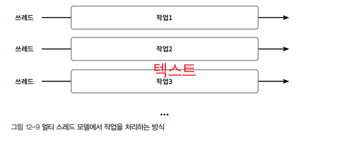
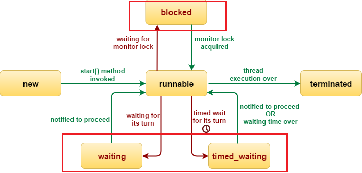

프로세스는 여러 명령어들의 하나의 실행 단위이다. 스레드는 하나의 프로세스에 존재하는 여러 개의 실행 단위이다. 하나의 스레드 실행은 싱글 스레드라 하며, 여러 스레드의 실행은 멀티 스레드라고 한다.
Thread Class 방식 vs Runnable 방식
thread class 방식은 Thread 클래스를 상속해 스레드를 실행하며, Runnable 방식은 Runnable 인터페이스를 구현해서 실행하는 방식이다.
1. Thread Class 방식
Thread 클래스를 상속해 스레드를 실행하는 예제이다.
class TestThreadByThreadClass extends Thread {
public void run() {
System.out.println("스레드 실행중");
}
public static void main(String args[]) {
TestThreadByThreadClass thread = new TestThreadByThreadClass();
thread.start();
}
}
스레드 실행중
2. Runnable 방식
Runnable 인터페이스를 구현하여 스레드를 생성하는 예제이다.
class TestThreadByRunnable implements Runnable {
public void run() {
System.out.println("쓰레드 실행중");
}
public static void main(String args[]) {
TestThreadByRunnable thread = new TestThreadByRunnable();
Thread t1 = new Thread(thread);
t1.start();
}
}
스레드 실행중
멀티 스레딩
멀티 스레딩은 동시성(concurrency)와 병렬성(parallelism) 성질이 존재할 수 있다. 동시성은 단일 프로세서상에서 멀티 스레드가 번갈아 가면서 실행되는 성질을 의미하며, 병렬성은 멀티 코어상에서 실행되는 멀티 스레드이다.

단일 프로세서에 실행되는 멀티 스레드는 병렬성(parallel)로 실행되는 착각을 주기도 한다. 프로세서는 스위칭 알고리즘에 따라 우선 순위를 조정한다. 진정한 병렬 실행은 다중 코어에 기반한 멀티 스레딩이다. 멀티 프로세스가 중요한 이유는 프로세서의 최대 속도를 사용하기 위함이다. 병렬성의 경우 데이터 연산량이 많은 AI 프로그래밍에서도 중요한 요소가 되었다. 이 때 각 프로세스에서 멀티 스레드를 실행하게 하는 것이필요하다.
1. Thread 우선순위
멀티 스레딩시 각 스레드 우선순위를 1~10의 값으로 priority를 지정할 수 있다.
thread.setPriority(Thread.MAX_PRIORITY); // 우선순위 값은 10이다.
thread.setPriority(Thread.NORM_PRIORITY); // 우선순위 값은 5이다.
thread.setPriority(Thread.MIN_PRIORITY); // 우선순위 값은 1이다.
2. 임계 영역 처리
임계 영역(critical seciton)은 공유된 코드 영역이다. 멀티 스레드가 동시에 실행 될 때 특정 코드가 단 하나의 스레드만 접근이 필요하다. 임계영역은 비임계영역(Non Critical Section)과 함께 존재할 수 있다.
비임계영역
임계 영역
비 임계 영역
java에서 임계 영역은 synchronized 키워드를 이용해 정의할 수 있다. 하나가 동기화 메서드이며, 다른 하나는 동기화 블록이다. 동기화 메서드는 synchronized로 선언한 임계 영역 메서드이며, 동기화 블록은 메서드 내부 코드에 synchronized로 정의한 임계 영역이다. 만약 thread A가 임계영역을 점유 하고 있으면 해당 임계영역 lock처리가 되며 만약 thread A가 임계영역을 점유하고 unlock처리를 하지 않으면 Dedlock 상태가 된다. 이는 프로그램 오류 유형에 해당 되어 해결이 필요하다.
A.동기화 메서드를 이용한 임계영역 정의
동기화 메서드에 두 스레드는 접근할 수 없으므로 동기화 메서드가 완전히 종료 되기 전까지(lock이 풀리기 전까지)는 다른 스레드가 접근을 할 수 없다. 아래 예제는 동기화 메서드(print)를 두개의 스레드가 동시에 실행 될 때의 예제이다.
class TestSynchronized {
// critical section - 단 하나의 스레드만 접근 가능
synchronized void print(String pThreadName) {
for (int i = 1; i <= 3; i++) {
System.out.println("[" + pThreadName + "] " + i);
try {
Thread.sleep(1000);
} catch (InterruptedException e) {
e.printStackTrace();
}
}
}
public static void main(String args[]) {
// single object 생성
final TestSynchronized obj = new TestSynchronized();
Thread t1 = new Thread() {
public void run() {
obj.print("t1");
}
};
Thread t2 = new Thread() {
public void run() {
obj.print("t2");
}
};
t1.start();
t2.start();
}
}
[t1] 1
[t1] 2
[t1] 3
[t2] 1
[t2] 2
[t2] 3
t1 스레드가 실행할때 동기화 메서드를 실행하고, 이때 t1의 동기화 메서드 종료가 되지 않았기 때문에 t2 스레드는 t1 스레드가 마칠 때까지 대기한다.
t1이 동기화 메서드 print 실행 (t2는 t1이 실행한 동기화 메서드 print가 마칠때까지 대기)
t2가 동기화 메서드 print 실행
B.동기화 블록를 이용한 임계영역 정의
다음은 synchronized 로 정의된 동기화 블록이 포함된 스레드를 실행하는 예이다.
class TestSynchronizedBlock {
void print(String pThreadName, int n) {
// critical section - 단 하나의 스레드만 접근 가능
synchronized (this) {
for (int i = 1; i <= 3; i++) {
System.out.println("[" + pThreadName + "] " + i);
try {
Thread.sleep(1000);
} catch (InterruptedException e) {
e.printStackTrace();
}
}
}
System.out.println("finished "+pThreadName);
}
public static void main(String args[]) {
// single object 생성
final TestSynchronizedBlock obj = new TestSynchronizedBlock();
Thread t1 = new Thread() {
public void run() {
obj.print("t1", 1);
}
};
Thread t2 = new Thread() {
public void run() {
obj.print("t2", 100);
}
};
t1.start();
t2.start();
}
}
[t1] 1
[t1] 2
[t1] 3
finished t1
[t2] 1
[t2] 2
[t2] 3
finished t2
t1 스레드가 실행할때 print 메서드를 실행하고, 이때 t1의 print 메서드내의 동기화 블록 종료가 되지 않았기 때문에 t2 스레드는 t1 스레드가 마칠 때까지 대기한다.
t1이 동기화 메서드 print 실행 (t2는 t1이 실행한 동기화 메서드 print가 마칠때까지 대기)
t2가 동기화 메서드 print 실행
스레드 상태 제어
스레드는 생명 주기와 관련하여 스레드 상태가 존재한다.
| 스레드 상태 | 설명 | 관련 메서드 |
|---|---|---|
| New | 스레드 생성됨 | 스레드가 생성된 상태, 단 아직 실행되지 않은 상태. Thread t1 = new Thread() |
| Runnable | 스레드 실행중 | 생성된 스레드가 실행된 상태. t1.start()로 실행 가능, yield() 메서드를 이용해 스레드 중지 가능 |
| Timed waiting | 스레드 대기(timeout 기준) | Thread.sleep(sleeptime), Object.wait(timeout), Thread.join(timeout), LockSupport.parkNanos(timeout),LockSupport.parkUntil(timeout) 후에 Timed waiting 상태가됨 |
| Waiting | 스레드 대기 (timeout 없음) | Objecgt.wait(), Thread.join(), LockSupport.park()후에 Waiting 상태가됨 |
| Blocked | 블록됨 | Synchronized block이나 메서드 실행 되면 Block 상태가됨 |
| Terminated | 스레드 종료 상태 | - |
